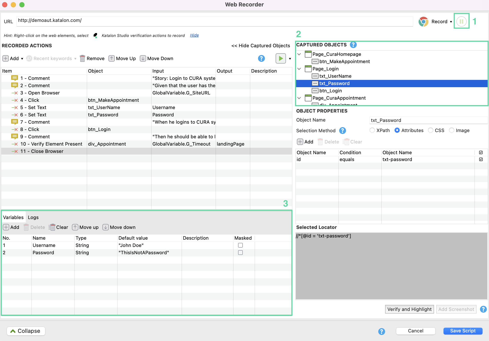
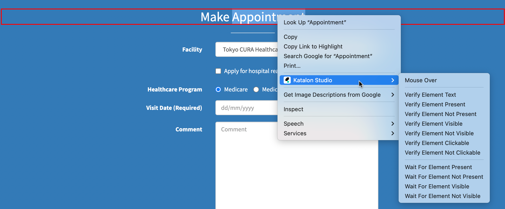
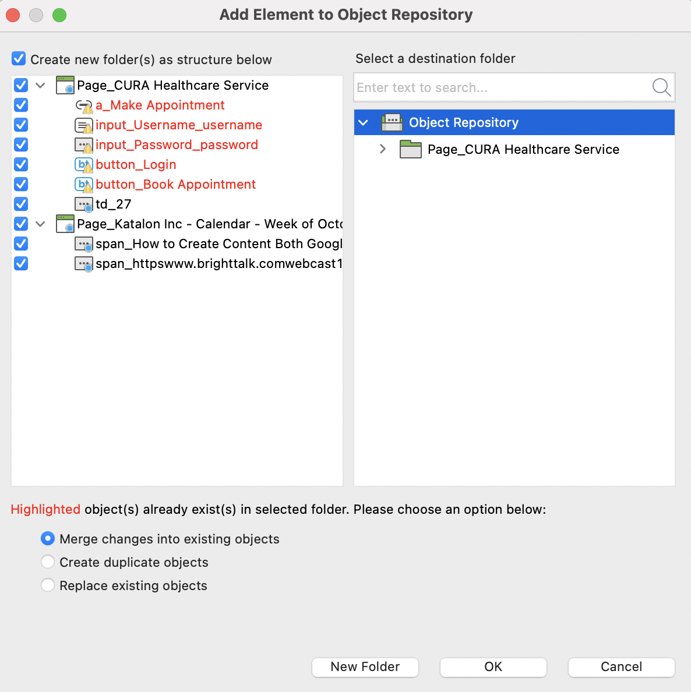
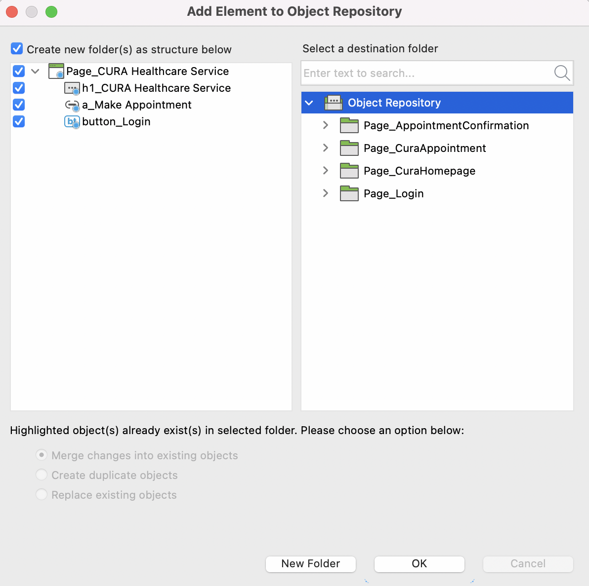
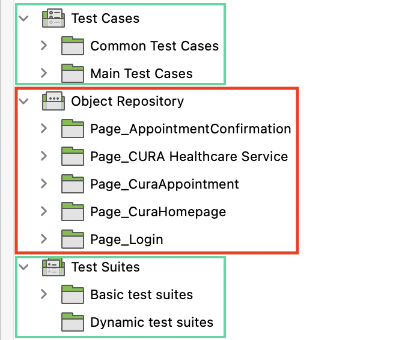
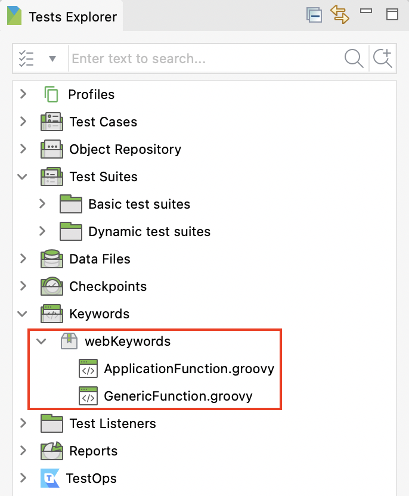
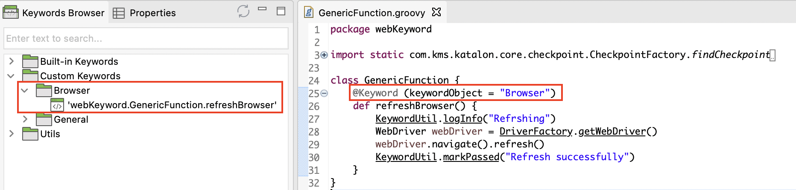
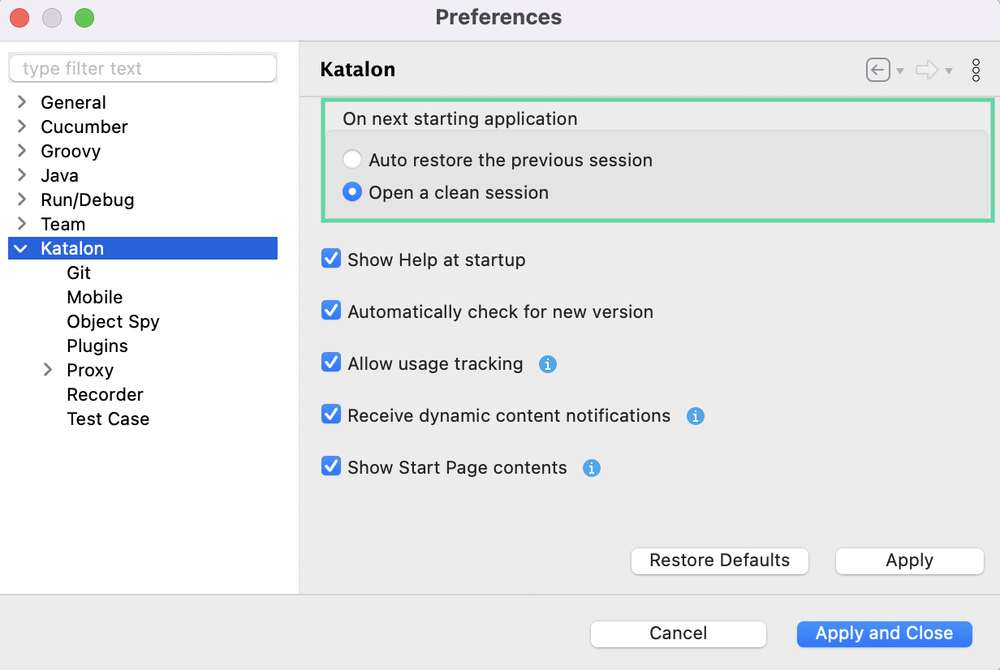
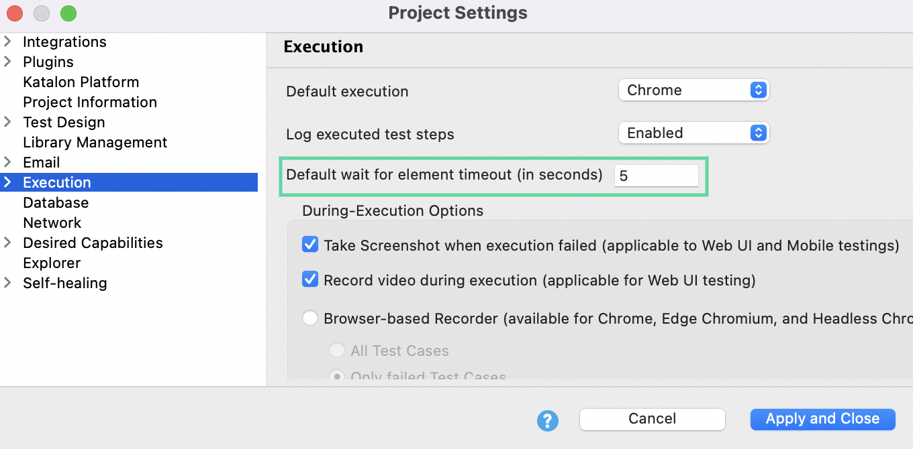

Katalon Studio best practices
This article provides best practices for successful test automation using Katalon Studio.
If you are new to Katalon Studio, first make sure to create your first test with the Quick guide for testers, and get familiar with Katalon Studio capabilities in Explore Katalon Studio.
Naming conventions
Defining a naming convention for your team to follow helps to keep the tests clean and organized. Good naming makes it easier to find tests and understand the purpose of each test. You can apply naming conventions to the following test artifacts.
Variables- For local variables, use the camelCase convention: start with a lowercase letter, then capitalize the first letter of every following word.
- Example:
userAge,firstOperand
- Example:
- For global variables, use uppercase.
- Example:
PASSWORD
- Example:
Adding appropriate comments or description for the variables also helps your team quickly understand what is under test.
KeywordsExample:
searchName
In Katalon Studio, the object ID includes the name of the test object and the folder containing it. With that in mind, you should use a name that corresponds with the AUT DOM structure. Include three parts in the ID: the location of the element on the web page, the element type and an appropriate name to describe what the element is.
You can combine the above formula with camelCase convention as well.
- Example:
Login_Page/buttonLogin,Checkout_Page/inputNumber
Record and playback function
Test recording is a good place to get started for new automation testers. The Web Recorder utility in Katalon Studio captures your actions performed on the AUT and converts them into ready-to-run code.
- Before using the record and playback function, we strongly recommend users play around with the AUT DOM structure. If the AUT DOM structure has dynamic DOM tag values, you can adjust the default selection method used in Recorder utility. For more instructions, see Selection methods for Web testing.
In Web Recorder dialog, clicking on Expand button opens the Recorded actions and Captured objects view. You should take some time to review the actions and objects and, if required, make some additions and deletions.

Choose to pause & resume the Recorder if necessary.
Avoid changing the names of the captured objects and folders to reduce duplicity of objects.
Add the description for the test steps while recording or later.
During your test recording, you can right click to use the advanced actions from Katalon Studio displayed below.

Manage object repository
Using the Recorder function may lead to a huge number of test objects in the Object Repository. The following tips should help you better manage your Object Repository.
Duplicate objects
Katalon Studio identifies duplicate objects as objects with the same object IDs and several common attributes.

Merge changes into existing objects: Add unique changes of the newly recorded object to the existing object, but still keep the existing object ID.
Create duplicate objects: Save the newly recorded object separately from the existing object.
Replace existing objects: Override the ID and attributes of the existing object with the newly recorded object.
If you are using the Recorder for the first time, you can save all the objects with the displayed default configurations.

If you record the test again, you should select the module folder first, so the Recorder will show all the duplicate objects; then, you should save with the Merge changes into existing objects option.
Object repository structure

Make sure the object folders are inside the Object Repository as per the Page Object Model (POM) structure. You should follow the same folder structure for Test Cases and Test Suites as well.
Create test object during runtime
/**
* Construct a Katalon-compatible TestObject in memory.
* @param css (String) The CSS selector used to find the target element.
* @return (TestObject) The constructed TestObject.
*/
@Keyword
static TestObject makeTO(String css) {
TestObject to = new TestObject()
to.addProperty("css", ConditionType.EQUALS, css)
return to
}
Credit to Russ Thomas
"css" to "xpath".Manage custom keywords
The following recommendations can help you better manage your custom keyword files.
GenericFunction: here you can store keywords used for all your projects within the organization.ApplicationFunction: here you can store keywords used for specific AUT.

You should always declare the category for the custom keyword via keywordObject. Doing so, Katalon Studio creates a separate folder for the keyword in the Keywords Browser.

Data-driven testing
DDT at test case level: Use data binding when you want to run the test from start to finish for all the iterations.
DDT at test suite level: Use data binding when you want to test a specific test multiples times for an attached set of data.
General tips
The following suggestions can improve your experience with Katalon Studio.
Keep Katalon Studio up-to-date: Upgrading to the most recent version of Katalon Studio ensures you can access to the latest updates and enhancements. By default, Katalon Studio automatically checks for the most recent version every time the application starts. For more details, refer to Update Katalon Studio.
Reduce application starting time: When set to auto restore the previous session on next starting application, it takes more time to launch Katalon Studio.
To reduce the starting time, go to Katalon Studio > Preferences > Katalon, select Open a clean session and click Apply and Close.

Reduce Self-healing function wait time: By default, it can take up to 30 seconds to to invoke the Self-healing function. The delay is controlled by the Default wait for element timeout setting.
To reduce the wait time, go to Project > Settings > Execution, then set the Default wait for element timeout to a lower number (e.g. 5 seconds).
